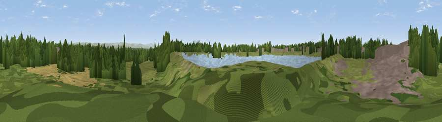

Parrenthorn
#42385 in England · top 96% of its area beats it · near Simister · access?Where it is
The exact computed spot (SD 82840 05218). Click the marker for map links.
Public access: no public right of way or access land is recorded at this exact spot — it may be on private land. Computed from Natural England's CRoW access layer and OpenStreetMap rights of way — not the legal definitive map. Always verify locally.
The view, rendered

A 360° render of this exact spot computed from the terrain model, tree cover and land cover — summer colours, afternoon light, calibrated against photographs of famous viewpoints. Real trees, hedges and buildings will differ in detail.
The panorama
Grey silhouette: terrain skyline in each direction (720 bearings, Earth curvature and refraction included). Dashed green: skyline with trees (+15 m) and buildings (+8 m) as obstacles. Blue strip: how far the ground is visible on each bearing.
Where the view opens
Wedge length = distance to the farthest visible ground on that bearing (vegetation-aware). Rings at 10, 25 and 50 km.
What fills the view
37% woodland · 36% grassland · 16% built-up · 7% cropland · 4% water
Angular shares of the visible panorama (visual magnitude), not map area. Landscape diversity 0.59 (0–1 Shannon).
Key numbers
More beautiful places nearby
The staircase of upgrades: each row has a higher view potential than everything closer. Driving times are estimates from straight-line distance, calibrated against real road routing — check an actual route before setting out.
| Place | Direction | Drive | Score |
|---|---|---|---|
| Viewpoint near Simister | SE · 1 km | ~3 min | 48.3 |
| Viewpoint near Heap Bridge | N · 4 km | ~9 min | 68.9 |
| Viewpoint near Limefield | N · 8 km | ~16 min | 71.0 |
| Viewpoint near Hazelhurst | NNW · 12 km | ~23 min | 75.1 |
| Viewpoint near Edenfield | N · 14 km | ~25 min | 77.5 |
| White Brow | WNW · 18 km | ~31 min | 82.9 |
| Warton Crag | NNW · 75 km | ~99 min | 83.2 |
| Viewpoint near Grange-over-Sands | NNW · 85 km | ~109 min | 83.4 |
53.54332, -2.26042 · source: osm peak · position refined by local search. Computed location — check access rights before visiting.